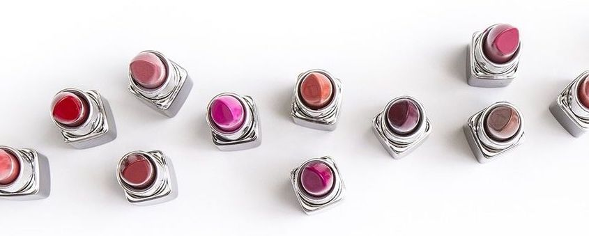
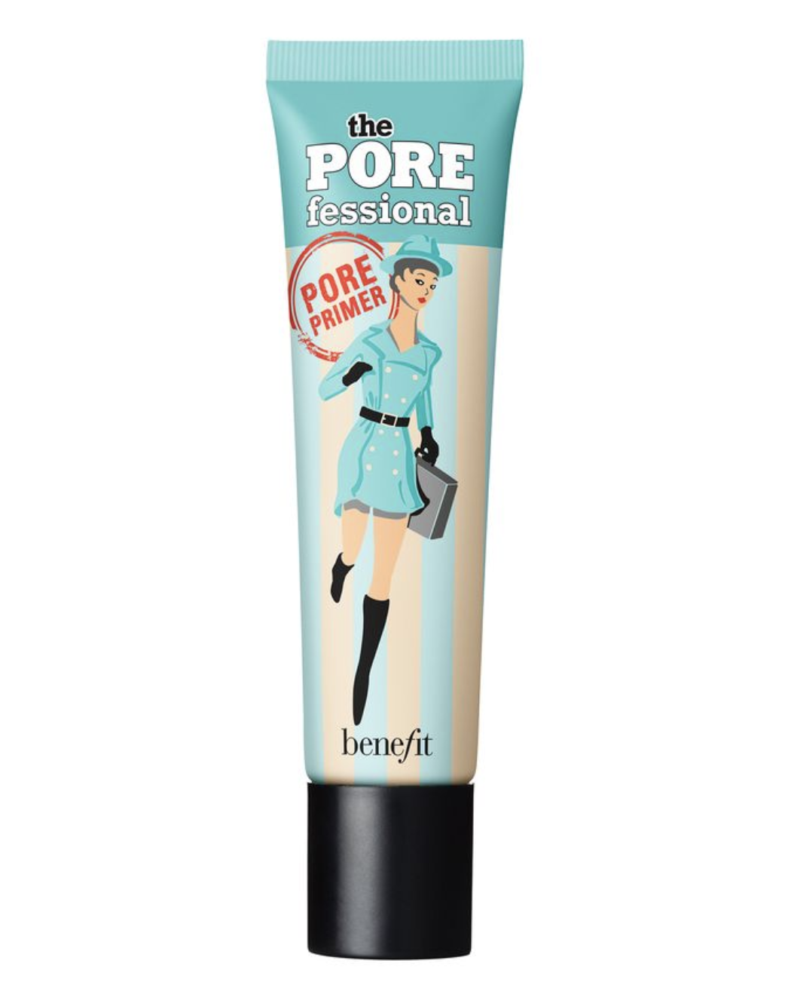
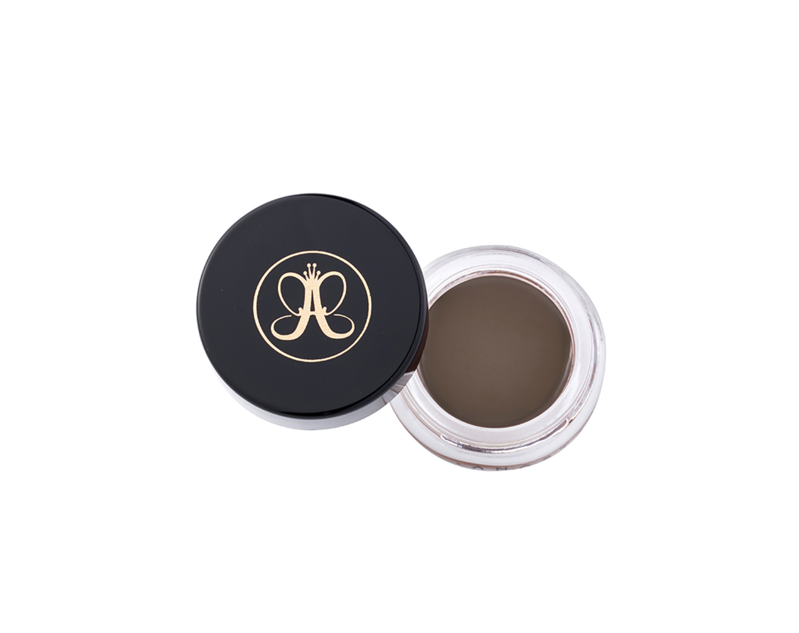
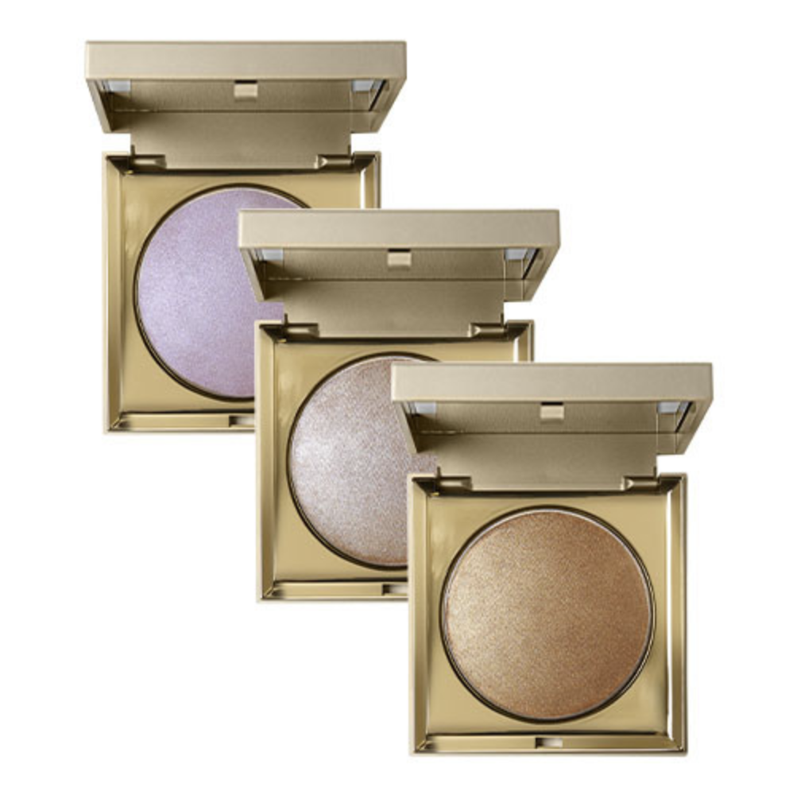

BEAUTY REVIEW: MY TOP 5 MAKEUP PRODUCTS
May 2, 2018
When it comes to makeup, there are MILLIONS of different products to choose from, and sometimes it’s hard to tell which ones are really worth the money. I've tried my fair share of prodcuts, but I always come back to these 5…
1. BENEFIT POREFESSIONAL PRIMER
This is everything you could want from a primer. Your foundation never sinks into your pores and it stays on all day.
2. FENTY PRO FILT'R FOUNDATION
This stuff is always sold out, but if you can get your hands on it, buy it! They have a huge range of colors and it has a beautiful, natural finish.

3. ANASTASIA BEVERLY HILLS DIPBROW POMADE
If you want perfectly defined brows, look no further! Dipbrow stays on all day, and they have a huge selection of colors. Make sure you get a good angled brush so you can get that perfect arch.
4. STILA HEAVEN'S HUE HIGHLIGHTER
Highlight on fleek! I love this because it gives you a more natural, inner glow instead of looking like someone dumped glitter on your face, but it’s still very noticeable. It comes in 3 different colors, but my personal favorite is the middle color, "Kitten."
5. URBAN DECAY ALL NIGHTER SETTING SPRAY
Last but not least, this setting spray is an essential final step to your makeup routine. It gives you a nice dewy finish, and your makeup seriously stays in place all night!


DAILY MEME:
CONTACT ME:
Josie11486@yahoo.com